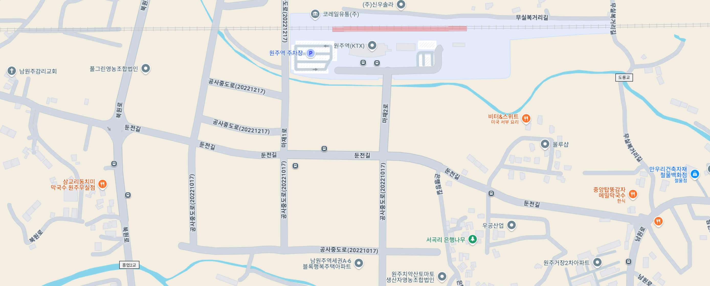

진흥원 소개
홈
>
진흥원 소개
>
찾아오시는 길
찾아오시는 길

- 주소
- (26395)강원특별자치도 원주시 마재2로 10 창업지원허브 2층
- 전화번호
- 033-764-3160
대중교통 이용 시
-
기차
원주역 하차 후 도보로 6분
-
버스
원주 하차: 34-1 (35분 소요), 111 (40분 소요)
마전 하차: 5 (22분 소요), 18 (20분 소요), 30 (20분 소요)
자가용 이용 시
-
동중주교차로에서 210m 이동 후 ‘원주, 제천’ 방면으로 직진 → 둔전사거리에서 ‘판부, 원주역’ 방면으로 우회전(31km) → 원주역 사거리 전 신호등에서 좌회전 후 우회전
-
문막사거리에서 ‘원주혁신도시, 원주’ 방면으로 373m 이동 후 우회전 → 5.8km 이동 후 광터교차로에서 ‘원주혁신도시’ 방면으로 우회전 → 6.2km 이동 후 흥업교차로에서 ‘충주, 흥업’ 방면으로 오른쪽 방향 → 430m 이동 후 벌말삼거리에서 ‘원주’ 방면으로 좌회전 → 둔전사거리에서 ‘판부, 원주역’ 방면으로 우회전(31km) → 원주역 사거리 전 신호등에서 좌회전 후 우회전
-
남원주IC에서 ‘충주’ 방면으로 224m 이동 → 1.7km 이동 후 ‘판부’ 방면으로 좌회전 → 원주역 사거리 전 신호등에서 좌회전 후 우회전
-
원주톨게이트에서 ‘원주시청’ 방면으로 216m 이동 → 62m 이동 후 원주IC 교차로에서 ‘시청, 혁신도시, 기업도시’ 방면으로 우회전 → 6km 이동 후 단계지하차도에서 ‘남원주IC’ 방면으로 지하차도 진입 → ‘판부’ 방면으로 좌회전 → 원주역 사거리 전 신호등에서 좌회전 후 우회전